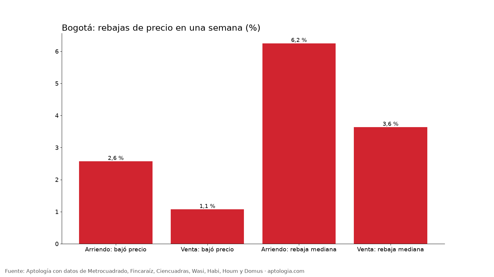
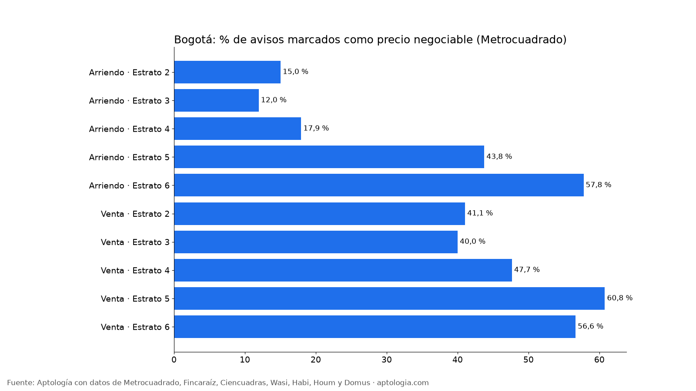

Rebajas de precio y cuánto negociar en Bogotá: cuántos avisos bajan el arriendo o el precio de venta en una semana (octubre 2026)
Estudio con datos abiertos (CC BY 4.0). Versión original: https://www.aptologia.com/estudios/rebajas-de-precio-y-cuanto-negociar-vivienda-bogota-2026 · DOI: 10.5281/zenodo.23454133
En una semana, el 2,6 % de los avisos de arriendo en Bogotá bajó su precio, con una rebaja mediana del 6,2 %; en venta bajó el 1,1 %, con una rebaja mediana del 3,6 %. Además, el 52,1 % de los avisos de venta y el 38,0 % de los de arriendo en Metrocuadrado se declaran negociables.
Resumen: seguimos a diario el precio de 73.624 avisos únicos de vivienda en Bogotá del 11 al 18 de octubre de 2026.
Actualizado: 18 de octubre de 2026 (datos del 18 de octubre de 2026) · Próxima actualización: mensual.

Resumen
| Indicador | Arriendo | Venta |
|---|---|---|
| Avisos seguidos toda la semana | 19.126 | 54.498 |
| Bajaron el precio en la semana | 2,6 % | 1,1 % |
| Rebaja mediana (entre los que bajaron) | 6,2 % | 3,6 % |
| Rebaja del 25 % que más bajó (o más) | 9,3 % | 6,5 % |
| Subieron el precio en la semana | 0,5 % | 0,5 % |
| Avisos marcados "negociable" (Metrocuadrado) | 38,0 % | 52,1 % |
En Habi, que muestra el precio anterior de sus inmuebles en venta, la rebaja mediana acumulada es 3,9 % (122 avisos).
Por estrato

| Operación | Estrato | Bajaron precio | Rebaja mediana | Negociable | Avisos |
|---|---|---|---|---|---|
| Arriendo | Estrato 2 | 3,4 % | 8,6 % | 15,0 % | 626 |
| Arriendo | Estrato 3 | 3,0 % | 6,2 % | 12,0 % | 4.074 |
| Arriendo | Estrato 4 | 3,2 % | 5,9 % | 17,9 % | 4.924 |
| Arriendo | Estrato 5 | 2,7 % | 6,1 % | 43,8 % | 2.801 |
| Arriendo | Estrato 6 | 1,7 % | 6,4 % | 57,8 % | 6.532 |
| Venta | Estrato 2 | 1,0 % | 4,3 % | 41,1 % | 3.126 |
| Venta | Estrato 3 | 1,2 % | 3,5 % | 40,0 % | 11.502 |
| Venta | Estrato 4 | 1,6 % | 3,4 % | 47,7 % | 11.368 |
| Venta | Estrato 5 | 1,2 % | 3,7 % | 60,8 % | 9.738 |
| Venta | Estrato 6 | 0,7 % | 3,8 % | 56,6 % | 17.604 |
Cómo usarlo para decidir (cuánto negociar): una rebaja de 6,2 % en arriendo y de 3,6 % en venta es lo que los propios dueños están cediendo en pocos días: es un punto de partida razonable para ofrecer. En los estratos donde más avisos se declaran negociables, hay más margen. Si un aviso lleva semanas publicado, pide más.
Preguntas frecuentes
¿Cuánto se puede negociar el arriendo en Bogotá? Cuando un dueño baja el precio, la rebaja mediana es del 6,2 %; en una sola semana lo hizo el 2,6 % de los avisos (datos del 11 al 18 de octubre de 2026).
¿Cuánto se puede negociar el precio de un apartamento en venta en Bogotá? La rebaja mediana observada en una semana fue del 3,6 %, y en Habi la rebaja acumulada mediana es del 3,9 %; el 52,1 % de los avisos de venta en Metrocuadrado se declara negociable.
¿Qué porcentaje de avisos baja de precio? En una semana, el 2,6 % en arriendo y el 1,1 % en venta.
Metodología
- Fuente: avisos vivos de vivienda recogidos por la ingesta de Aptología en Metrocuadrado, Fincaraíz, Ciencuadras, Wasi, Habi, Houm y Domus, del 11 al 18 de octubre de 2026. Corte: 18 de octubre de 2026.
- Depuración: un mismo inmueble publicado varias veces se cuenta una sola vez (agrupación por portal y, entre portales, por precio, área, habitaciones y coordenadas). Se descartan precios y áreas fuera de rango y, en arriendo, se resta la administración cuando el portal la incluye en el canon.
- Qué se mide: precios pedidos (publicados), no precios de cierre.
- Rebaja: avisos vistos desde el 11 de octubre cuyo último precio es entre 0,5 % y 40 % menor que el primero. Se descartan cambios que equivalen exactamente a sumar o restar la administración.
- Negociable: marca que el anunciante elige en Metrocuadrado (único portal que la publica).
- Ventana corta: una semana de seguimiento; en ventanas más largas la proporción de rebajas es mayor.
- Limitaciones: son precios pedidos en portales, que pueden diferir del valor final de arriendo o venta. La cobertura es mayor en el norte de Bogotá y en estratos 4 a 6, porque ahí se concentra la oferta publicada. Los barrios y la localidad vienen de lo que escribe cada portal; cuando falta la localidad se asigna por los avisos vecinos más cercanos.
- Datos abiertos: datos.csv, licencia CC BY 4.0.
Cómo citar
Pinzón Pineda, D. M. (2026). Rebajas de precio y cuánto negociar en Bogotá: cuántos avisos bajan el arriendo o el precio de venta en una semana (octubre 2026). Aptología. https://www.aptologia.com/estudios/rebajas-de-precio-y-cuanto-negociar-vivienda-bogota-2026. Datos: datos.csv, licencia CC BY 4.0.